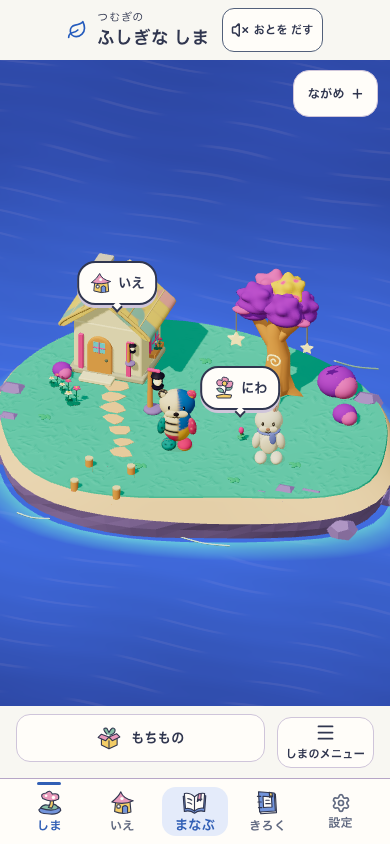
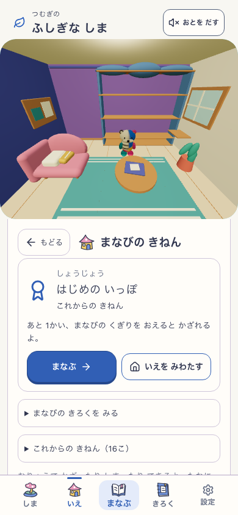
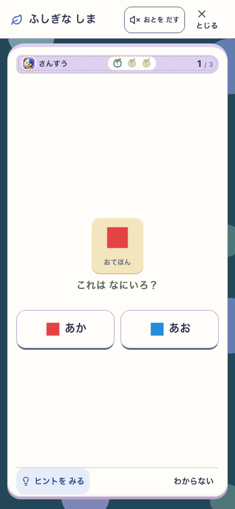
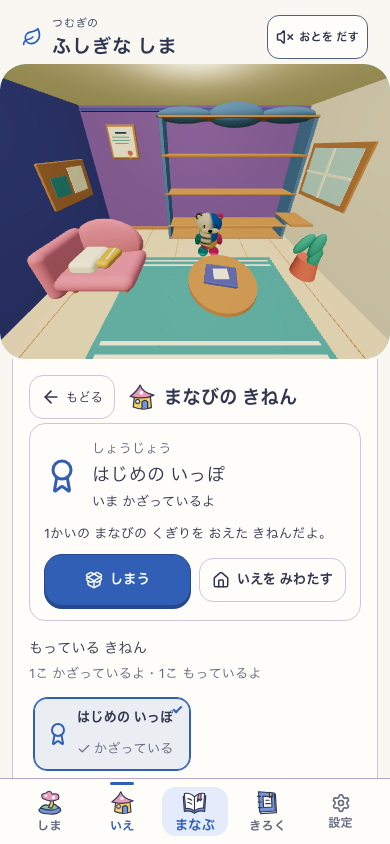
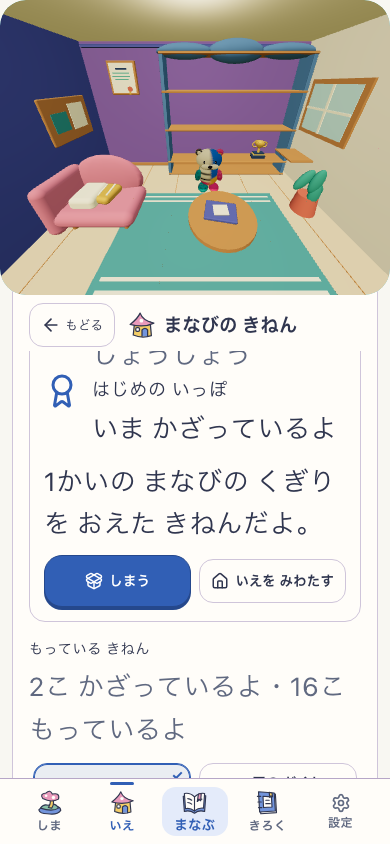
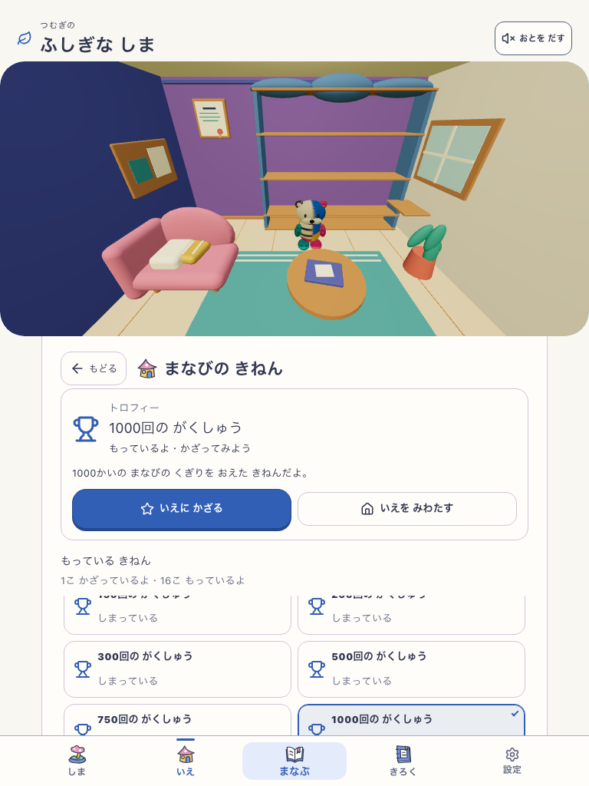
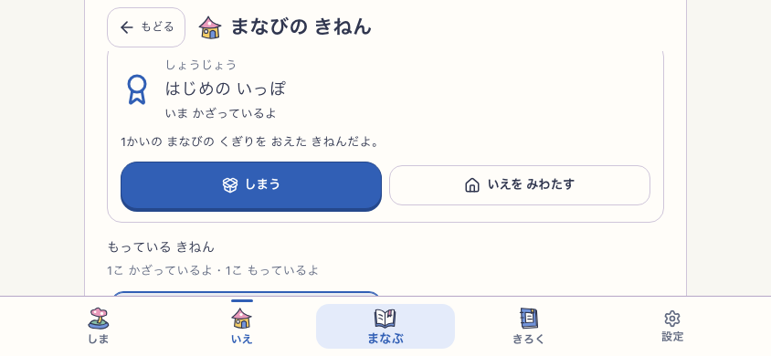

棚・掲示板の現在地を履歴と再読み込みに引き継ぐ。未取得の賞は「まなぶ」へ。棚から選んだ品に移り、短い画面でも操作を隠さない。保存の再確認は家のどこからでも。







固定ローカルproduction: 70ad92c-house-edges-v2 / mystic-island-shore-garden-v18 / VITE_ISLAND_ENABLED=true。音off・reduced motion。01〜05は新規プロフィールから実初回3問を回答。文字拡大と全16品は別の診断fixture。世界の造形、新ホームの公開、子どもの理解の評価はこの検証に含めません。